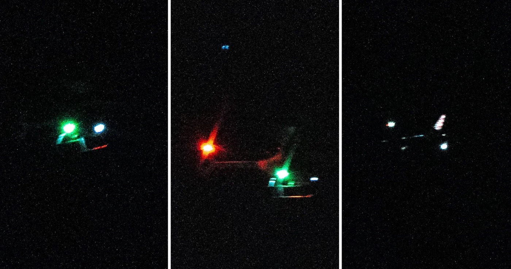
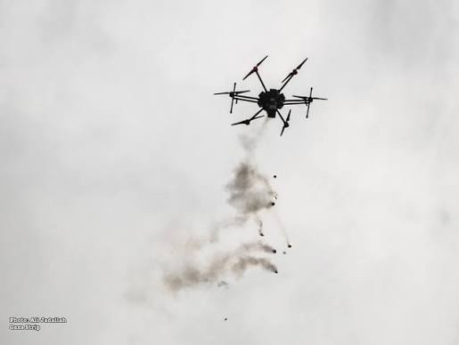
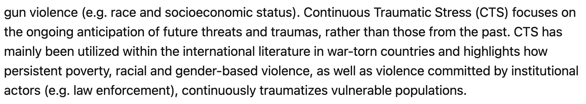

Living under
the hum
The psychological toll of drone surveillance, and why it should count as civilian harm in future wars
Cindy · Victoria · Evelyn · Pranav · Siddhanth
As drone surveillance spreads from war zones to everyday life, what does it do to the people beneath it, and should that count as civilian harm?
Why this question
War’s costs reach far beyond the battlefield, and more ordinary people now live under drones.
The gap
Rich first-hand accounts of life under drones, and separate work on reducing civilian harm, but little that connects the two.
Thesis
Persistent drone surveillance causes real, documented psychological harm because civilians can never tell who is being watched or when a strike will follow. In future wars, that harm should be counted as civilian harm, not dismissed as a side effect.
The harm scales with how credible the threat is: severe where drones strike, milder where they only watch.
Drones are now aimed at ordinary people
Scale
~4,000%
more drone attacks in war zones from 2020 to 2024
- 19,704 attacks in 2024 alone, more than 50 every day
- 450+ armed groups now fly them, not just national militaries
Cost
~$360
The price of a Ukrainian attack drone. An early-2000s military drone cost about $7M.
- Before, drones were saved for high-value targets due to their high cost
- The new low cost of drones meann they can be sent after anyone with little repercussions
Targeting
#1
In 2025, drones became the most common way Ukraine’s civilians were attacked
- In Sudan, 880+ civilians killed in early 2026, in hospitals, markets and camps for displaced families
- Hospitals and aid workers hit 308 times in 2024, up from fewer than 10 a year before 2022
CIVIC/ACLED via Just Security · ACLED (2025–26) · Vector · AP via WTOP · Arab News (2026) · Insecurity Insight
You don’t need a war to feel watched
New Jersey, late 2024
A few posts about lights in the night sky snowballed into 5,000+ tips to the FBI and temporary flight bans. Officials later said most drones were FAA-approved, but many neighbors never felt reassured.
Europe, fall 2025
Unidentified drones shut down airports in Copenhagen, Oslo, Munich and Brussels. Analysts think the point was to make people anxious, and to make them doubt their government could protect them.
Everyday skies
A drone overhead is becoming part of an ordinary day: US police drone use has nearly tripled since 2020, and a 2025 executive order clears the way for routine long-range flights.

When you can’t tell who is flying or why, reassurance doesn’t land, and social media fills the silence with fear.
USA Today via AOL (2024) · Intl. Airport Review (2025) · The Debrief (2025) · Deseret News · EO 14307 (2025)
Continuous traumatic stress, Fear of the unknown, and The panopticon effect
Never knowing is its own kind of trauma


Framework adapted from Hijazi et al. (2019), Current Psychology · Stanford & NYU (2012)
2004–2012
Watched, then struck
“Anticipatory anxiety”
A local psychiatrist’s term for patients’ constant fear that an attack could come at any moment.
Body and mind
Emotional breakdowns, fainting, nightmares, startle at loud noises, irritability, loss of appetite.
Funerals emptied
People avoided funerals and gatherings after reports that they had been struck.
Rescuers held back
Neighbours and aid workers waited hours to help the wounded, fearing a follow-up strike.
Harm left uncounted
The authors found harm to daily life well beyond death and physical injury.
Stanford IHRCRC & NYU Global Justice Clinic, Living Under Drones (2012) · PRI (2012) · Bureau of Investigative Journalism (2012)
2006–present
The “zanana”: a sound that never leaves
~4,000
Monthly drone flight hours over Gaza reported by AFP in 2022: roughly five drones in the sky at all times, even between wars.
Residents named the drones for their sound: zanana, a buzzing like bees.
Powerlessness
A Gaza psychiatrist told AFP you can swat an insect but not a drone, which feeds helplessness.
Children
Clinicians describe night terrors, bedwetting, and trouble with speech and concentration.
It lingers
Doctors warn symptoms do not fade when the sound pauses, because flights can resume any time.
AFP via Asharq Al-Awsat (2022) · The New Arab (2025) · Al-Quds (2026)
2024–2025
Cheap drones, hunting people
150+
Civilians killed by short-range drone attacks in the Kherson region from July 2024, per the UN Commission of Inquiry’s May 2025 report. Residents call it a “human safari.”
Terror as the purpose
The UN found the attacks’ primary purpose was to spread terror among civilians.
Fear became flight
Thousands fled, which the commission found to be the crime against humanity of forcible transfer.
On the legal record
A UN inquiry tied drone-induced terror directly to crimes against humanity and war crimes.
UN Independent International Commission of Inquiry on Ukraine (May 2025) · Human Rights Watch (June 2025) · Atlantic Council (2025)
Same mechanism, different intensity
| Case | Drone’s role | Documented effects | How life changed | Counted as harm? |
|---|---|---|---|---|
| Waziristan | Round-the-clock watching; targeted and “signature” strikes | Anticipatory anxiety, nightmares, startle | Avoided funerals; delayed rescue | No: outside official casualty counts |
| Gaza | Near-constant watching; strikes in escalations | Powerlessness; child night terrors | Broken sleep; children kept close | No: described by clinicians and press |
| Kherson | Short-range drones hunting individuals | Terror; fear of leaving home | Mass flight from the city | Yes: UN found crimes against humanity |
The pattern: law recognises this harm only when terror is the intent. As a by-product, it goes uncounted.
IHL protects minds from intended terror, not side effects
Clearly covered
Intentional terror
Violence or threats meant mainly to terrorise civilians are banned (Additional Protocol I, Art. 51(2)). This is the rule applied in Kherson.
Contested
Incidental mental harm
Proportionality weighs “injury to civilians” against military advantage. Whether mental injury counts is debated; the traditional view says no.
Emerging
Cumulative mental harm
New scholarship, including 2026 International Review of the Red Cross articles, argues harm built up over many operations should count.
Persistent surveillance sits in the gap: rarely meant to terrorise, never a single attack, cumulative by design.
Bosi, ICRC Humanitarian Law & Policy Blog (2025) · Lieblich (2014) · Diamond & van Benthem, IRRC (2026) · Holmes, IRRC (2026)
The strongest case against us
“Surveillance is not an attack, so IHL’s harm rules don’t apply.”
Surveillance is part of the targeting cycle. In all three cases, civilians knew strikes could follow, and the harm comes from that credible link.
“Mental harm is too subjective to weigh in a proportionality call.”
Clinicians document consistent symptoms, and IHL already weighs other uncertain harms. Hard to measure is not the same as zero.
“Drones are more precise, so they cause less harm than bombing.”
Precision may cut deaths per strike, but persistence widens who is affected. Both should be counted, not just one.
At home, the same mechanism runs quieter
Hunted
Kherson. Strikes are likely and aimed at people. Result: terror and flight.
Watched and struck
Waziristan, Gaza. A strike could come any time. Result: chronic anxiety.
Watched only
US police drone programs. No strikes, but unknown watching. Likely result: wariness and self-censorship, not trauma.
LAPD flew drones 3,500+ times in its first-responder pilot. Beyond FAA rules, no federal law governs these programs, so standards vary by state.
Los Angeles Times (2026) · InvestigateTV, quoting Jay Stanley of the ACLU (2026) · EFF (2026)
Four recommendations
In war · 01
Count mental harm in proportionality
Include foreseeable psychological harm in pre-strike assessments and civilian-harm tracking.
In war · 02
Treat persistence as a precaution
Limit low-altitude loitering over homes, schools and camps where it adds little intelligence.
After war · 03
Include mental health in redress
Compensation and aid after conflict should cover psychological harm, especially for children.
At home · 04
Make domestic drones legible
Public flight logs, data-retention limits and independent oversight, so residents know when and why.
A drone does not have to fire to harm the people below it.
If future wars are fought under permanently occupied skies, counting only the dead will leave most victims invisible. Psychological harm from persistent surveillance should be measured, weighed and redressed as civilian harm.
Bibliography
AFP. (2022, October 1). ‘Worry and fear’: Incessant Israeli drones heighten Gaza anxiety. Asharq Al-Awsat. https://english.aawsat.com/node/3905716
Bosi, G. (2025, October 16). Six ways IHL protects mental health. ICRC Humanitarian Law & Policy Blog. https://blogs.icrc.org/law-and-policy/2025/10/16/six-ways-ihl-protects-mental-health/
Diamond, E., & van Benthem, T. (2026). Protections against cumulative mental harm under international humanitarian law. International Review of the Red Cross. https://doi.org/10.1017/S1816383126101313
Dickinson, P. (2025, May 29). UN probe: Russia’s ‘human safari’ in Ukraine is a crime against humanity. Atlantic Council.
Edney-Browne, A. (2019). The psychosocial effects of drone violence: Social isolation, self-objectification, and depoliticization. Political Psychology, 40(6), 1341–1356. https://doi.org/10.1111/pops.12629
Hijazi, A. M., Ferguson, C. J., Ferraro, F. R., et al. (2019). Psychological dimensions of drone warfare. Current Psychology. Springer.
Holmes, S. (2026). Incidental mental harm through a decolonial lens. International Review of the Red Cross. https://doi.org/10.1017/S1816383126101337
Bibliography
Human Rights Watch. (2025, June 2). “Hunted from above”: Russia’s use of drones to attack civilians in Kherson, Ukraine. https://www.hrw.org
Independent International Commission of Inquiry on Ukraine. (2025, May 28). Findings on drone attacks against civilians in the Kherson region. UN Human Rights Council.
International Committee of the Red Cross. (n.d.). FAQ: International humanitarian law and drones in armed conflict. https://www.icrc.org/en/article/faq-international-humanitarian-law-drones-armed-conflict
International Human Rights and Conflict Resolution Clinic (Stanford Law School) & Global Justice Clinic (NYU School of Law). (2012). Living under drones: Death, injury, and trauma to civilians from US drone practices in Pakistan.
InvestigateTV. (2026, February 6). Police drone programs expand as first-responder tool, raising privacy concerns in some. Gray Television.
Lieblich, E. (2014). Beyond life and limb: Exploring incidental mental harm under international humanitarian law. In D. Jinks, J. N. Maogoto & S. Solomon (Eds.), Applying international humanitarian law in judicial and quasi-judicial bodies (pp. 185–218). T.M.C. Asser Press.
Bibliography
Jany, L. (2026, April 28). [Article on the LAPD drone-as-first-responder pilot]. Los Angeles Times.
Lipton, B. (2026, July 23). Hundreds of drone-as-first-responder programs could soon be launched across the country. Electronic Frontier Foundation. https://www.eff.org/deeplinks/2026/07/hundreds-drone-first-responder-programs-could-soon-be-launched-across-country
Richardson, M. (2023). Drone trauma: Violent mediation and remote warfare. Media, Culture & Society, 45(1), 202–211.
Stanley, J. (2023). Eye-in-the-sky policing needs strict limits. ACLU. https://www.acluhi.org
The hidden cost of drone combat on soldiers’ mental health. (2015, April). Harvard National Security Journal. https://journals.law.harvard.edu/nsj/2015/04/
The New Arab. (2025). Psychological strain: Israel’s drones continue to terrorise Gaza. https://www.newarab.com
Zabrisky, Z. (2025, May 28). I walked the streets where Russia’s drones hunt civilians. The UN just confirmed it’s a war crime. Euromaidan Press.